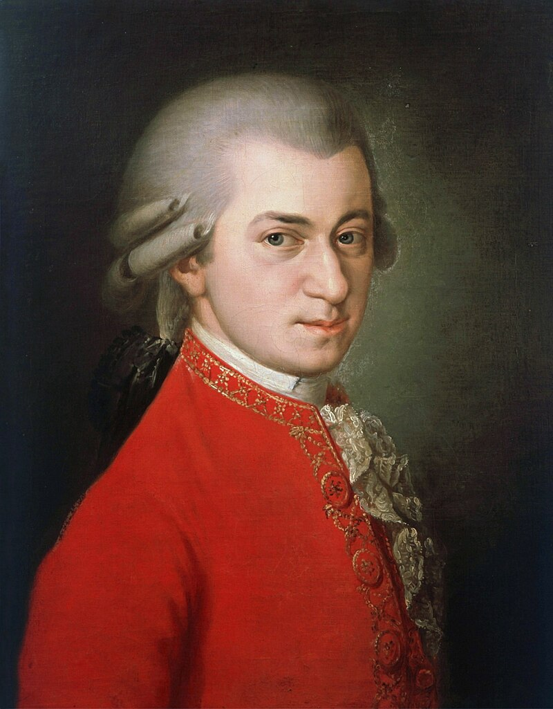

Wolfgang Amadeus Mozart, a prolific and significant composer of the Classical era, produced over 800 pieces across various genres during his brief life. Many of his works are considered among the finest in the symphonic, operatic, chamber, concertante, and choral repertoire. Mozart is widely regarded as one of the greatest composers in Western music history, known for his melodic beauty, formal elegance, and richness of harmony and texture.

Wolfgang Amadeus Mozart self-portrait
Source: Wikipedia
Wolfgang Amadeus Mozart's records and achievements include the creation of timeless classical music compositions that continue to be celebrated and performed worldwide.
Wolfgang Amadeus Mozart was born on January 27, 1756, in Salzburg, Austria. He showed prodigious musical talent from a young age and composed his first piece at the age of five. His remarkable career and musical legacy have left an indelible mark on the world of classical music.
Mozart's career is marked by his prolific output of classical compositions, including symphonies, concertos, operas, and chamber music. He served as a court musician, traveled extensively, and received commissions from various patrons and royalty.
His achievements include the creation of masterpieces like "The Marriage of Figaro," "Don Giovanni," and "Eine kleine Nachtmusik," which continue to be celebrated and performed by orchestras and ensembles worldwide.
Wolfgang Amadeus Mozart family portrait.
Source: Wikipedia
Wolfgang Amadeus Mozart Piano.
Source: Wikipedia
"The music is not in the notes, but in the silence between." - Wolfgang Amadeus Mozart
"I pay no attention whatever to anybody's praise or blame. I simply follow my own feelings." - Wolfgang Amadeus Mozart